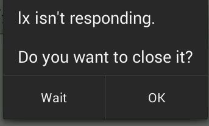

Android Anr异常 Posted on 2020-01-27 ANR异常其实就是主线程卡死，然后无法响应，大于6秒，会出现如下的一个错误报告：这个时候就是说我们卡死了，代码里如这个样子写： 123456try { Thread.sleep(60000);} catch (InterruptedException e) { // TODO Auto-generated catch block e.printStackTrace();} 解决办法也很简单，就是放在子线程中写耗时的操作！